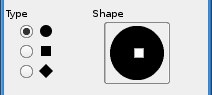

| 3.10. മച്ചി | ||
|---|---|---|

|
3. പെയിന്റ് ഉപകരണങ്ങൾ |  |
| 3.10. മച്ചി | ||
|---|---|---|
|
|
3. പെയിന്റ് ഉപകരണങ്ങൾ | |
മഷി പ്രയോഗം ഒരു antialiased വായ്ത്തലയാൽ ഖര ബ്രഷ് സ്ട്രോക്കുകൾ വരയ്ക്കാൻ ഒരു നിയന്ത്രിക്കാവുന്ന മുന കൊണ്ട് മഷിപേനയോടൊപ്പമുള്ള ഒരു സിമുലേഷൻ ഉപയോഗിക്കുന്നു. മുന വലുപ്പം, രൂപത്തിലും കോൺ സ്ട്രോക്കുകൾ റെൻഡർ ചെയ്യപ്പെടും എങ്ങനെ നിർണ്ണയിക്കാൻ ക്രമീകരിക്കാൻ കഴിയും.
You can find the Ink tool in several ways :
In the image-menu through: → → .
By clicking on the tool icon: in Toolbox,
or by using the K keyboard shortcut.
ഈ കീ ഒരു Color Picker ലേക്ക് മുന മാറ്റുന്നു.
സാധാരണ, ഉപകരണം ഓപ്ഷനുകൾ ഉടൻ ഒരു ഉപകരണം സജീവമാക്കാൻ പോലെ പണിസഞ്ചി കീഴിൽ ഘടിപ്പിച്ചിട്ടുള്ള ഒരു ജാലകം പ്രദർശിപ്പിക്കും. അഥവാ അങ്ങനെയല്ലെങ്കിൽ, നിങ്ങൾ തിരഞ്ഞെടുത്ത ഉപകരണം ഓപ്ഷൻ വിൻഡോ തുറക്കുന്ന → → വഴി ഇമേജ് ബാറില് നിന്നും ആക്സസ് ചെയ്യാൻ കഴിയും.
0 മുതൽ (വളരെ കനം) 20 (വളരെ കട്ടിയുള്ള) വരെയാണ് മൂല്യങ്ങളും കൂടെ പേന ന്റെ മുന ഉദ്ദശിച്ചിട്ടു വീതി നിയന്ത്രിക്കുന്നു.
ഈ തിരശ്ചീന പേന ന്റെ മുന ആപേക്ഷിക ഉദ്ദശിച്ചിട്ടു കോൺ നിയന്ത്രിക്കുന്നു.
ഈ മിനിമം നിന്ന് പരമാവധി, മുന വലുപ്പം നിയന്ത്രിക്കുന്നത്. 0 ഒരു വലുപ്പം വലിപ്പം പൂജ്യം, മറിച്ച് മിനിമം വലുപ്പത്തിലുള്ള മുന ഒരു മുന കാരണമാകാം ശ്രദ്ധിക്കുക.
തിരശ്ചീന മുന ബന്ധു ഉദ്ദശിച്ചിട്ടു ചെരിവ് നിയന്ത്രിക്കുന്നു. ഈ നിയന്ത്രണ ആൻഡ് ആംഗിൾ നിയന്ത്രണം മുകളിൽ വിവരിച്ച പരസ്പരം. പരീക്ഷണങ്ങളും എങ്ങനെ ഉപയോഗിക്കണം പഠന ഏറ്റവും മികച്ച മാർഗ്ഗം.
ഈ ഡ്രോയിംഗ് സ്പീഡ് ന്റെ ഒരു ഫലനമാണ് മുന ഫലപ്രദമായ വലുപ്പം നിയന്ത്രിക്കുന്നത്. അതാണ്, ഫിസിക്കൽ പേന കൊണ്ട് പോലെ വേഗത്തിൽ അടുപ്പിക്കുകയും ഇടുങ്ങിയ രേഖയാണ്.
സർക്കിൾ, സ്ക്വയർ, വജ്രം: തിരഞ്ഞെടുക്കാൻ മൂന്ന് മുന രൂപങ്ങൾ ഉണ്ട്.
മുന തരം വിദ്യാര്ഥി ആകൃതി ഐക്കൺ കേന്ദ്രത്തിൽ ചെറിയ ചില്ലു ബട്ടൺ മൗസിന്റെ 1 കൈവശമുള്ള ചുറ്റും ചലിക്കുന്ന വഴി അഡ്ജസ്റ്റു ചെയ്യാം.
